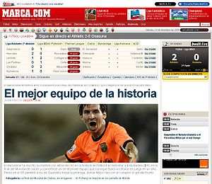
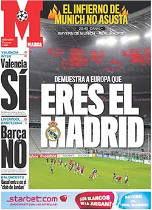
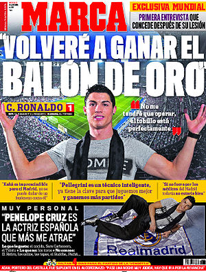
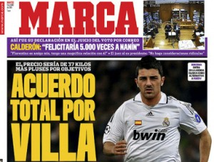

Marca
 De: La Frikipedia, la enciclopedia extremadamente seria.
De: La Frikipedia, la enciclopedia extremadamente seria.
| De la serie empresas malignas:
|
| Mar(i)ca
|
|
|
| Perteneciente al grupo:
|
Real Madrid™
|
| Se dedica a:
|
Manipular información a favor del Real Madrid™
|
| País de origen:
|
Madrid y demás ciudades de España
|
| Año de fundación:
|
6 de marzo de 1902 (junto con el Real Madrid™)
|
| Super Presidente:
|
Eduardo Inda, marioneta de Florentino Pérez [2]
|
| Nivel de maldad:
|
Infinita
|
| Empresas absorbidas:
|
Todos los diarios deportivos del país, junto con sus amigos del As(queroso)
|
| Número de empleados:
|
Socios del Real Madrid™
|
| Atentados contra la humanidad
|
Enredar, mentir y sacar un nuevo impreso cada día
|
| ¿Se aconseja trabajar aquí?
|
Sólo si no sabes de fútbol
|
| ¿Se recomienda el boicot?
|
Se aconseja
|
| Cantidad de denuncias:
|
Innumerables
|
| Sitio web:
|
Página oficial de Mar(i)ca
|
«¿Qué tal marquistas?»
~ Eduardo Inda , director de Marca, pensando que a alguien le interesan sus tonterías vídeos de opinión
«¿Que el Marca es un periódico? Lo siento, no me había dado cuenta, yo lo estaba usando de papel higiénico»
~ Un aficionado cualquiera sobre el Marca
«Tiene menos credibilidad que el curandero de mi pueblo»
~ Un aficionado cualquiera sobre el Marca
«El Barça no se puede quejar del arbitraje del día del Málaga»
~ Eduardo Inda , director del Mar(i)ca, sobre un partido en el que el árbitro se comió 4 penaltis a favor del Barça
«Los que siempre se quejan de los árbitros cuando pierden suelen ser unos perdedores»
~ Vicente del Bosque haciendo un Zas, en toda la boca al Marca
El Marca (más conocido como Mar(i)ca, Marcabrones o Marcanipuladores) es, junto con el Ass, el nombre del panfleto oficial del Real Madrid™, y que creó el club para lavar el cerebro de la sociedad y convertir a los españoles en aficionados incondicionales del Real Madrid™ (y antibarcelonistas, por supuesto).[1] Se trata de un periódico que vive en su peculiar mundo. Según aficionados de otros equipos, es un excelente sucedáneo del papel higiénico, incluso viene de lujo para envolver las acelgas.
El "periódico"
Esta publicación (no merece que le llamen periódico) es un órgano propagandístico del Real Madrid™ [3] de imparcialidad mundialmente reconocida. Se divide en varias partes que analizaremos a continuación.
Portada
La portada es muy simple. Cuando no hay partido de su Real Madrid™, SIEMPRE saldrá en portada CR9™ (preferentemente, medio desnudo, para ponerse cachondos). Los días de partido, si gana el Real Madrid™, se vanaglorian de su superioridad abrumadora. Si pierde, hay dos opciones. La primera es decir que están en crisis y no reconocer que son malos de cojones. La segunda y más normal es quejarse del árbitro y acusarlo de robarles la Liga con el famoso Villarato u otras conspiraciones judeo-masónico-comunista-internacionales (sí, muy triste buscar excusas). Si el Barça juega distinto día que el Real Madrid™, la portada de la mañana siguiente también será de dos tipos: Si gana el FC Barcelona pondrán en portada una noticia de Frenando Alonso (preferiblemente relacionada con Ferrari), si éste pierde, ésta tendrá a un jugador del Barça (preferiblemente Eto'o), y dirá en letras grandes algo del estilo de "El Barça da risa", "Cagómetro a tope" o "Tenemos la liga en el bote". Cuando juega la selección, la portada del día del partido dirá algo como "Vamos a pasarles por encima". La del día siguiente dirá siempre algo como "Somos la vergüenza de Europa" o "(Nombre del árbitro) 1, España 0", y estarán toda la semana hablando de la gran injusticia que supone el que Baúl no esté en la selección. También son conocidas las portadas que empiezan con algo de ``Mou´´ y sigue una palabra como ``Mouchísimo´´ o ``Moucabreo´´.
Interior
El interior siempre es igual. Las diez o doce primeras páginas tratan sobre el Real Madrid™, de lo buenos y lo guapos que son Cristiano Ronaldo y Kaká, de las proezas del Ser superior Florentino Pérez (sí, el que dejó tirado al club en 2006), y del interés de la entidad por un jugador de la segunda división de Guatemala. Las dos o tres siguientes de lo malo que es el Barça, de lo gordo que está Joan Laporta, de lo corrupto que es Rosell y del pastizal que costó Neymar. Las dos páginas siguientes del resto de equipos de Primera, la siguiente de todos los de Segunda. Dos páginas más para hablar de baloncesto y de Fórmula 1, en la esquina de abajo de la página, en pequeñito que Federer ha ganado en tenis, y en las últimas dos, unos comentarios de la redacción del "periódico" sobre lo bueno que es el Real Madrid™ si ha ganado el último partido, o sobre la crisis tras perder contra el Almería 0-3 en el Bernabéu.
Contraportada
La contraportada tendrá una afoto, normalmente, del presidente del Real Madrid™, y en ella pondrá lo bueno del equipo, y de lo bien que se la traga el presi cuando aparece "Nicolas Cage". También suele aparecer alguna crítica del Barça y/o de los árbitros/Villarato, sea directamente o mediante un chiste (y luego, el Real Madrid™ va fichando a árbitros como el Megía Dávila ese, pero claro, a quien favorecen es al Barça...).
Internet
 A veces los becarios hacen de las suyas y se ven cosas así, aunque sea por unos pocos minutos.
Su página web nos muestra siempre el mismo aspecto. En grande y en primer plano, la noticia del Real Madrid™. A un lado, los problemas del Barça y de sus jugadores, y en pequeño el resto de las noticias del deporte. Luego, rebuscando, encuentras noticias como "Sudáfrica gana el Mundial de Rugby" o "Kulunguelé bate el récord en los 100 metros lisos". A un lado de la página se nos muestra la portada ya mencionada antes, y abajo una encuesta sobre lo bueno del Real Madrid™, lo malo del Barça, o sobre si debe o no ir Raúl a la selección. Actualmente no hay día en el que no aparezca nada sobre Cristiano Ronaldo [4], Kaká, Benzema, etc. y el Real Madrid™, o algo negativo del Barça (para esto último, buscan hasta debajo de las piedras: que si no fichan ni a un juvenil de Pakistan, que si Joan Laporta está gordo y es un miserable separatista...), aunque sea una mentira tan evidente como esta. Si no es posible a pesar de todos sus esfuerzos, desvían la atención hablando de paridas [5]. También se caracterizan por un gran conocimiento del fútbol, como demostraron al darle el Trofeo Miguel Muñoz de mejor entrenador de Segunda 2008-09 a Marcelino García (2º con Real Zaragoza, 56 millones de presupuesto) en vez de Esteban Vigo (1º con el Xerez C.D., 8 millones de presupuesto) [6].
Estatuto
 Típica portada del Marca.
 "Dios" (bien grandes las comillas) en portada.
Pues sí, los seudoperiodistas que "trabajan" en el Marca deben seguir una serie de normas fácilmente deducibles si echamos una ojeada a su publicación[2]. Es el llamado Marquismo. Por ejemplo, es obligatorio criticar (o lo que es lo mismo, prohibido hablar bien) a estos personajes: Joan Laporta, Samuel Eto'o, los árbitros (cuando favorecen al Barça y todo eso), Ángel María Villar, Manuel Pellegrini [7], Gonzalo Higuaín... Y es obligatorio hablar bien (o no criticar) de: Baúl, Sergio Gramos, Cristiano Ronaldo, Florentimo Pereza, José Mourinho. Si la afición del Real Mandril (encabezada por Tomás Roncerdo) hace cánticos racistas o similares, pues no se dice, no vaya a ser [8] [9]. Pero claro, si lo hace la afición contraria, entonces ya hay que ponerles a parir y denunciarlo a los 4 vientos.
¿Sabías que...

Pesadilla permanente de los periolistos de Marca.
- ...la defensa del Madrid del partido del 2-6 había sido proclamada por el Marca "mejor defensa de Europa"?
- ...después del partido de ida de la Champions 2006-07 contra el Bayern, la portada era esta (lógicamente, el Madrid fue eliminado)?
- ...el día del 4-0 al Liverpool en la Champions 2008-09, la portada era esta?
- ...según el Marca, existen incontables complots arbitrales en contra del Madrid y a favor del Barça en todos los rincones del mundo (pero, curiosamente, sólo se mencionan cuando perjudican al Madrid o favorecen al Barça [10])?
- ...un día dicen blanco, y luego dicen negro?
- ...otro ejemplo de lo anterior [11] [12]?
- ...son unos manipuladores mentirosos de mierda?
- ...son franquistas [13]?
- ...Mou es el puto amo (según ellos) [14] [15] [16] [17] [18] [19]?
- ...y no digamos Cristiano Ronaldo [20] [21]?
Portadas inolvidables
 Marca destaca por sus informaciones serias, objetivas y contrastadas.
Así es, querido amigo Frikipedista, los del Mar(i)ca son tan deficientes mentales que tienen sus portadas mentirosas y manipuladoras (pero, sobre todo, descojonantes) colgadas en su web, como si fuera lo más normal del mundo. Aquí van unas cuantas:
Total, que viendo esto, algunas portadas que podrían hacer son: esta, esta, esta, esta, esta, esta, esta...
Opiniones de internautas
- dano 255: "Me das vergüenza Inda, y ahora eliminar mi comentario y todo lo que queráis, pero se acabó de comprar MARCA y visitar vuestra web. Creo que muchos deberíais hacer lo mismo que yo. Este periódico se está convirtiendo cada vez más parcial gracias a este director y huele muchísimo el madridismo de sus editoriales que cada vez son más asquerosas. Todo lo malo es del Barcelona y todo lo bueno del Madrid. Envidia es lo que tenéis. Yo no soy del Barcelona pero creo que el Madrid tampoco se puede quejar de arbitrajes ni nada de eso."
- sphere: "MARCA, estaría muy bien que cuando saquéis una editorial del Barça pues sea para hablar de su juego, sus jugadores, su entrenador, etc. Pero sacar esto sólo cuando aparece un error arbitral a favor del Barça... No os he visto comentar que este es sólo el 2º penalty que le pitan al Barça, ni os he visto contar los penaltys que se han escamoteado este principio de temporada, ni el penalty inexistente del día del Madrid-Almería con gol ilegal de Benzema... Cada día a peor. PD: En algo tenéis razon, y es que lo de ayer no era penalty."
- dr9k: "Lloricas, anda que no le regalan al Madrid cosas y no lloráis."
- doll: "Messi ganó el Balón de Oro y le dedicaron una esquinita en la portada. Cristiano dice que lo va a ganar y le dedican una portada estrella para decir entre otras memeces que le gusta Penélope Cruz... ¿Periodismo deportivo? Esto es la versión en papel reciclado del HOLA".
- (El Mar(i)ca se pregunta cómo estaría la Liga sin las ayudas arbitrales al Barça) javycc: "¿Dónde estarían? Pues en la misma posición estaría el Barça si no llega a ser por los robos del Madrid al Almería, Racing y Valencia... a parte, en qué quedamos, ¿Es penalty o no? Porque bien que decíais que contra el Español no era penalty (es el mismo penalty) ¿Y ahora sí? O el otro sí es penalty, el otro, el de Capdevila a Pedro también lo es porque cuando llegaba al balón Capdevila le impide llegar al balón ilegalmente. Portadas que irían mejor: ya esta bien de los lloriqueos del Madrid o ya está bien de la hipocresía madridista".
- liriankhara: "Esto es increíble. INCREIBLE. Un poco más de objetividad por Dios. Si el Barça llevaría 4 puntos menos, el Madrid como mínimo 6: Racing y Almería entre otros. Y ya no hablemos de la Champions, donde el Milan debería ser primero de grupo si no os estuvieran, como simepre, anulando GOLES legales al rival. Marca, cada día dáis más asco. ¿Por qué no publicáis estas tendenciosas editoriales en cada partido que juega el Madrid? Ahora va a resultar que las lipotimias de Ronaldo dentro del área sí son penalty. ¿Por qué no hicisteis esta editorial pero al revés cuando al Barça le escamotearon entre Liga y Champions más de 10 penalties en la primera vuelta? Mirad, sois penosos y este periodicucho cada día se parece más a salsa rosa con tanto fan que se hace llamar "periodista". No digo más, os retratáis vosotros solos. Ahora, para variar, borradme el comentario."
- marcus17: "Muy bien Lecturas, ¿Por qué no nos enseñáis las fotos de la casa de este personaje tumbado en el sofá con sus mejores trapitos? Limpiaos bien la boca, que la tenéis pegada de todo el semen que os ha derramado el musculitos, ¿Eh Inda y compañía?".
- spanishgeorge: "¿¿¿De verdad es necesario que CR aparezca medio en bolas en la portada del Marca??? ¡Qué verguenza de diario deportivo!".
- hepu: "ESTA EDITORIAL ES LA MEJOR DEL MUNDO, LOS EDITORES DE MARCA SON DIOSES, TODO LO QUE RODEA AL MADRID ES UN REGALO DIVINO, GRACIAS SEÑOR SUPERIOR TODO EL MUNDO TE AMAMOS!!! Veo que este es el tipo de comentario que no borra Marca, porque es un tipo de comentario muy objetivo... no se si dais pena o asco... o una mezcla de ambas...".
- getxo7: "maximad, es bastante absurdo que sugieras que al que no le guste no lo lea, tratándose de un periódico y, además, del más leído del Estado. No eres el único que emplea ese latiguillo, que sólo sería válido si estuviésemos hablando, por ejemplo, de un tebeo. Pero no es un tebeo, aunque trate de parecerlo para dárselas de inofensivo. Es, repito, el periódico más leído del Estado. Y si es una mierda, que lo es; y sectario e infantiloide, si reblandece cerebros, miente, esparce porquería, emite opiniones gratuitas, sin fundamento e improcedentes, si hace todo eso, que lo hace; hay que decirlo y a gritos. Porque si no, gente como tú sufriréis las consecuencias en carne propia y los demás por teneros alrededor. Lo cual no quita que la cobertura deportiva que ofrece en cuanto a datos y seguimientos sea, en muchas ocasiones, todo lo profesional que cabría esperar".
- hprn: "De verdad que sois expertos en crispar y en mentir".
- kuff: "Todo se reduce a 6 copas, imposible de superar, y 300 millones pero cinco puntos menos y subiendo".
- consuman: "Y la caverna vuelve a conseguir su objetivo. Sólo dos partidos para un futbolista que le rompe la nariz a otro después de haber observado de reojo (se ve clarísimamente en las imágenes) donde se encuentra este. Con la acción más vergonzosa acaecida en el fútbol mundial (Pepe vs Getafe) más de lo mismo. Una sanción mínima de una temporada sin jugar se salda con una cifra irrisoria tras la campaña cavernícola. Me acuerdo cuando estos mismos pedían que Javi Navarro no volviera a jugar hasta que no lo hiciera Arango por sacar también el codo a pasear y "seguro que también" sin intención de hacer daño. Comparar esta acción con la de Messi es un absurdo. Messi echa los brazos para atras y hace palanca con el cuerpo del jugador del Sevilla para intentar soltarse (debió ser amarilla por usar los brazos), mientras CR96 solta un codazo y falla, mira de reojo donde está el objetivo y a la segunda acierta. Hasta el jugador del Sevilla (la supuesta víctima) ha dicho que son acciones incomparables".
- sphere: "Si pedíais que Diawara estubiera sancionado el mismo tiempo que Cristiano estuviera lesionado, ¿por qué ahora no pedís que Cristiano esté sin jugar el mismo tiempo que Mtiliga? Si queréis justicia, predicad con el ejemplo".
- jonaninho: "COPIAR Y PEGAR, HASTA EL FORO PETAR: esta noticia refleja la mierda y tonterías con las que los borregos mandriles se tienen que conformar, y consolar, este año a pesar de 300 millones invertidos y para no hablar de que otros juegan Champions. Y PARA ELLO NADIE MEJOR QUE INDA EL PSICOPATA, UN ¿PERIODISTA? CAPAZ DE ESCRIBIR Y DECIR QUE "LA NUEVA ARMA" SECRETA NO LA CONOCE NADIE y dos párrafos más abajo dice que es habitual en casi todo el mundo. INDA: a tal perro (por qué mordiste al Pelusa si sólo te dijo que se la mamaras), tales borregos, SOLO PODIAIS SER DEL MIERDRIZ, del señorío al hazmerreir del mundo. MIL GRACIAS MIERINDA, firmado: culés y antimadridistas, o sea toda España menos la caverna o cabaña borreguil".
- feer: "Qué gracia me hace ver al equipo más favorecido por los árbitros de la historia de la liga española, el Madrid, hecho indudable, llorando todo el día por los árbitros jejeje ME PARTO".
- shadom: "Como siempre el Marca manipulando, vamos en su línea, ¿pero por qué no ponéis cuando el Madrid hace lo mismo?? Madridistas lloroneres, estáis con los huevos en la garganta porque el Barça está primero y los 300 kilos no funcionan como esperaban jejejejejej llorones".
- messiasd10s: "LLORONATO LLORONATO LLORONATO LLORONATO LLORONATO LLORONATO LLORONATO LLORONATO LLORONATO LLORONATO LLORONATO LLORONATO LLORONATO LLORONATO LLORONATO LLORONATO LLORONATO LLORONATO LLORONATO LLORONATO LLORONATO LLORONATO LLORONATO LLORONATO LLORONATO LLORONATO LLORONATO LLORONATO LLORONATO LLORONATO LLORONATO LLORONATO LLORONATO LLORONATO LLORONATO LLORONATO LLORONATO LLORONATO LLORONATO LLORONATO LLORONATO LLORONATO LLORONATO LLORONATO LLORONATO LLORONATO LLORONATO LLORONATO LLORONATO LLORONATO LLORONATO LLORONATO LLORONATO LLORONATO LLORONATO LLORONATO LLORONATO LLORONATO LLORONATO LLORONATO LLORONATO LLORONATO LLORONATO LLORONATO LLORONATO LLORONATO LLORONATO LLORONATO LLORONATO LLORONATO LLORONATO LLORONATO LLORONATO LLORONATO LLORONATO LLORONATO LLORONATO LLORONATO LLORONATO LLORONATO LLORONATO LLORONATO LLORONATO LLORONATO LLORONATO LLORONATO LLORONATO LLORONATO LLORONATO LLORONATO LLORONATO LLORONATO LLORONATO LLORONATO LLORONATO LLORONATO LLORONATO LLORONATO LLORONATO LLORONATO Copia y pega".
- alcorconazo: "Mira que es grande esto, que el presidente del Sevilla, que no es persona de casarse con nadie os tenga que decir esto a la caverna mediática; empezad a informar correctamente, si os atrevéis, pero claro para eso se ha de ser valiente. Después del 2-6, hace casi un año más casi 300 millones en fichajes, más el Alcorcón, más el juego de pena que hace el R.Madrid, sus estrellas están estrelladas y los comentarios de Valdano, no os queda nada más que el villarato. Sois el NODO pero deportivo".
- lloronato666: "De los creadores de "El Canguelo", de los productores de "Fin de Ciclo" y de los guionistas de "Este año Ganamos el Triplete" llega a las pantallas la nueva superproducción de La Caverna Madridista S.A. "EL VILLARATO" todos los días en su quiosco. NO SE LA PIERDAN".
- jokan: "Iba a decir que ya nadie se atreverá a decir Villarato... pero visto lo visto, parece que no basta con pitar un penalti en contra del Barça y expulsarles a 2... todavía el árbitro ha beneficiado al Barça, según los madrilistas claro, es la leche".
- salpuerko: "EL CIRCO MADRIDISTA CONTINUA... VAMOS A CHORREAR AL LIVERPOOL... 4-0 Y PARA CASA... VAMOS A GANAR EL TRIPLETE... LLEGA EL ALCORCON Y PARA CASA...... VAMOS A GANAR 3-0 AL LYON... Y PARA CASA.... JAJAJA PREPOTENTES. EN LA VIDA SERÉIS LO QUE HA SIDO EL BARSA EN 2009".
- ferrinho: "Titular: OTRA VEZ LA MISMA HISTORIA PERO CON 250 MILLONES MENOS".
- un_cule: "1.2.3... ELIMINADOS OTRA VEEZ!!! JAJAJAJAJAJA :D".
- mike: "Fueron a por el triplete y les dieron por el ojete".
- oyecomova: "Demasiao!! Ni utilizando artilugios bucales que mejoran el rendimiento puede con Messi. Esto no se puede considerar doping bucal?".
- panchostars: "Mañana especial de Marca, ¡¡CR9 usa calzoncillos a rayas que le dan poderes sexuales!!! Yo ya estoy ahorrando para comprarlo".
- javierico69: "¡Joderos merengues de mierda! Ni con el desgraciado del Mejuto conseguisteis ganar. El árbitro del Marca, además de ser un maldito merengue, trabaja en la ONCE. ¡Qué vergüenza de diario, que asco! Meteros los 300 millones por el culo que pa el caso os harán algo más que en fichar maricas de pacotilla. ¡ARRODILLAOS ANTE EL MESSIAH!".
- davidoff-11: "jajajaja... como siempre, los árbitros favoreciendo al Realisimo Madris!!!! Con la cantidad de faltas hechas y muchas duras, resulta que el que más tarjetas se llevó fue el Barça que no hizo ni la mitad de faltas que el Madris!!!!!! El Madris tenía que haberse quedado con 8 jugadores, y encima hay algunos que todavía van diciendo que fue un robo la victoria del Barça, jajajaja...".
- methodman: "El Hernáez diciendo que Messi hizo mano y el de Raúl está mal anulado, yo no sé si esta gente ven los partidos o directamente quieren reírse de la gente, los tenéis como el Espartero amigos de Marca".
- chesteru: "No pasa nada madridistas. Ánimo. La temporada que viene Floren endeuda en 300 millones más el club y ya está. Total, no es su dinero".
- makymino: "¡Vikingos fuera de Europa...! Insert 300 million".
- fofi: "Qué contentos estáis los del Marca, qué ganas tenéis de que no llegue el Barça a la final en vuestro estadio, y del arbitraje mejor no hablar, si hubiera sido el Madrid estaríais llorando, cambiad esta política forofa merengona que vais a perder muchos lectores, ahora sois peores que el As y ya es decir".
- osito812: "Estáis hablando tonterías, unos prepotentes que este año lo ibáis a ganar todo y os quedáis en las puertas de todo, sois la generacion ni-ni, ni Copa ni Champions ni naá de náa de náa, a cascarla que tenéis que animar a otros por que los vuestros se quedaron fuera hace muuucho, hala a chuparla y no olvidéis, triplete, 2-6 y tres más este año, a cascarla merengones y regocijaos en vuestra rabia de no haber podido ni estar ahí, jajajajaja".
- alquimisstasev: "Parece mentira que celebréis esto; aunque, pensándolo bien, como lleváis tanto tiempo sin comeros ni una rosca deberéis tener ganas de celebrar algo, qué patéticos XD".
- athletic100x100: "GASTANDO 300 MILLONES, ROBANDO PARTIDOS, AMAÑANADO PARTIDOS DE TERCEROS Y NI AUN ASÍ GANÁIS UN TÍTULO. TALONARIO VERGONZOSO OS DEBERIAIS LLAMAR. PRINGAOS. NI UN TÍTULO Y MIRA QUE RECURRÍS A TODO".
- jonpu8: "Cuanto daño estás haciendo a Marca, Eduardo Inda. Escondes las verdades y exageras las mentiras. Tu acoso y derribo a todo lo que huela a culé es demencial. Por no decir nada de tus penosos vídeos diarios que se están convirtiendo en el hazmerreír en todo internet. El más claro, el otro día, diciendo que el BCN había ganado gracias al no penal de Piqué cuando evidentemente viste y escondiste el penal a Pedro con 0-3 que hubiera hecho arrollar claramente al Sevilla. Bueno, ahí te quedas con tu bazofia diaria.. Ah, a ver si te cortas el pelo que eres más feo que un pie".
- jmelende3: "Yo antes sólo compraba el Marca cuando estaba en la playa para leerlo bajo la sombrilla. Ya ni eso... leyendo lo que hay que leer, me compro antes un tebeo. Eh, y soy socio del Real Madrid desde el año 85".
- david matrix: "Señores, dejen las drogas".
- yliopisto: "Esto es el Marca o el Mou-arca?? A ver con qué nos deleita EI cuando el Madrid sea eliminado de Copa".
- erfurboeazi: "Editorial de Marca el 28 de noviembre de 2010: "Mou vete ya. Después de caer con estrépito por 4-0 en el Camp Nou al portugués se le ha agotado todo el crédito. Los 8 puntos que separan al Madrid del Barcelona parecen ya insalvables con un técnico merengue que va a la deriva. Florentino debe reaccionar de inmediato si no quiere echar por la borda su faraonico proyecto antes de Navidades" (casi lo clava este tío).
- argentinogranota: "Ups! Me metí en la revista pronto... ¡Ah, no! es Marca! ¿Y esto que tiene que ver con el fútbol? ¿Mañana sacaréis que CR9 tiene menos celulitis que Messi? Va hombre... va por favor...".
- matabichejos: "Ya echaba de menos las tonterías de noticias sobre CR9... zapatillas nuevas, rayo láser, hijo ilegítimo, jersey nuevo...".
- elseneca: "Me inclino a pensar que al menos la mitad son chicos vigoréxicos y un pelín metrosexuales. Pero siguiendo el razonamiento de Marca para lelos, la conclusión es que si CR tiene el doble de admiradores [en Feisbuk] que Messi es el doble de bueno que Messi. Por lo tanto todo lo que no sea darle el FIFA World Player a CR será una estafa. Grande Marca. Desde Goebels nadie manipulaba como vosotros...".
- kyman: ""La entrevista que hoy publicamos echa por tierra los comentarios malintencionados que se han lanzado sobre su figura"... o sea, esta entrevista echa por tierra al mismo MARCA, son tan mierdas que se la echan encima".
- satarinho: "¿Mal comprado? ¿O ese titular no lo permite Floren?".
- ian_wright: "Nunca había visto en mi vida lamer el culo así a un presidente por parte de los medios informativos. Madre de Dios...".
- cule_xerez: "5 años de estudio de periodismo para dedicarse a escribir chorradas. Más credibilidad tiene un niño de 3 años".
- gman: "Marca cree a Kaká, pero es que al Marca no le cree nadie".
- arzu82: "Ese editorial no lo escribe... ni Roncero. ¿La defensa sólida? Y te salva el portero 5 ocasiones y te para un penalty... Si el partido fuera de Copa de Europa... ya estaríamos eliminados en la eliminatoria anterior, porque con ese nivel no se puede ganar la Champions. Lo que pasa es que como tenemos a Mourinho... vale todo".
- kokeru: "Lamentable lo de Marca. El Madrid de Pellegrini pierde la liga con 82 puntos y con récord histórico de goles y es crucificado por este diario. El Madrid de Mourinho (técnico eminentemente defensivo) encaja goles frente a dos equipuchos que no jugarían ni en 2ª B en España, gana con muchísimos apuros y en su primer test serio un Bayern sin Robben (gran figura el año pasado) le da un repaso en todas la facetas del juego, presión, contraataque, defensa... Pero Marca lo ve prometedor, lo ve un síntoma. ¿Un síntoma de qué? ¿De lo que va a ser la temporada? ¿Jugar mal y ganar? ¿A eso debemos aspirar los madridistas? Yo soy de los "resultadistas", me da igual ganar jugando mal, pero seamos serios, habéis crucificado a Pellegrini jugando bastante mejor y ganando con más autoridad...".
- luisssenrriqueee: "Mou empató once partidos en la liga italiana y eso al Madrid, con el Barça que tiene enfrente, no le va a valer, pero los que siguen creyendo que sigan. Yo soy culé, pero si me tuviera que jugar todo mi dinero en esta Liga me lo jugaría por el Barça. El Madrid sigue sin ser un equipo, no juega a nada (a absolutamente a nada) y esto en la actualidad no gusta. Así que, los que vayan al Bernabéu, que se mentalicen de que la historia continúa".
- merantlu: "¿Sabéis lo que es "vergüenza ajena"? Pues leyendo esta editorial es lo que yo he sentido, aunque después me he echado unas risas. Ni el que lo ha escrito se lo cree. Bueno, seguimos lamiéndole todo al Dios superior, ¿no? Por cierto, qué malos son los catalanes/culés, ¿no? ¿Habrá algo que el Barça haga bien y el señor Floren mal? Bueno, lo dicho, una de las editoriales más penosas de lo que se supone que es uno de los periódicos más importantes...".
- floxv: "DOS PREGUNTAS: ¿Quién es el fiera que escribió esto? Y la segunda y más importante: ¿Qué fuma y dónde lo pilla? jajjajajajaj aaajjaja jajajjajajaj ajjajajajjajaja, Marca sigue en su línea. Toma crisis".
- pako_cobos: "Y mañana en la portada pondrá... "Cristiano Ronaldo se saca un moco y es de oro"... Todo para no mostrar lo bueno que ha sido el FC Barcelona hoy... super Barcelona".
- rubpf: "¿Habrá alguna editorial que no empiece con "Mou..." "Mourinho..."? Qué cansinos. Madre mía como se le ocurra ganar un título. Tenemos Mou para el resto de la historia de este periódico".
- bohemio79: "Mourinho nuestro que estás en los cielos, santificado sea tu nombre. Venga a nosotros tu reino, hágase tu voluntad así en la tierra como en el cielo...".
- robinao79: "Dios, si el año pasado, con un inútil integral de entrenador y los jugadores sin autoestima hicimos 96 puntos y 102 goles... este año ¡¡¡LO VAMOS A ROMPER!!! Mira que yo quería que se quedase Pellegrini y Mourinho no me hacía gracia, pero desde que leo Marca he visto la luz... ¡que pase el Barça que lo vamos a triturar! ¡¡Voy a tener que pedir vacaciones en mayo para poder ir tantas veces a Cibeles!! Mourinho y Florentino son los p**** amos!!!".
- joker_cell: "Soy del Madrid, madridista hasta la médula, pero esta noticia ni la he leído, pero solamente ya el titular me parece patéticamente vergonzoso, campeón de pretemporada... ¿Que título es ese? En fin, deprimente".
- peperoni86: "Seguid así, Marca, vendiendo tripletes como todos los años, tranquilos que ya os eliminará el Poli Ejido en Copa y el Marsella en Champions, y la vida seguirá igual, nuevo entrenador, nuevo ciclo de un año, etc etc. Seguid viviendo del nodo y celebrando 50 aniversarios como anoche".
- sand_alchemist: "CANSINOS" (sobre el tema Mourinho y sus virtudes).
- alfonelsabio: "Tranquilo, a los que somos del Madrid este periódico también nos da asco".
- muh: "Es muy sencillo, no comentan más barcelonistas sino antimadridistas, que están creciendo exponencialmente gracias a la directiva que tenéis y a las editoriales y portadas que ofrece este periódico. Si a eso le sumas La Sexta y Cuatro, que de los 20 min. de deportes 15 son para el Madrid... Sólo hace falta andar por la calle, sean del equipo que sean, el odio al Madrid no para de crecer..."
- parmiliki: "El mayor enemigo que tiene hoy por hoy el Madrid, el que hace que caiga cada vez más antipático, que cada vez le pidan más dinero por un jugador, que los rivales salgan más motivados, etc, etc, etc... se llama MARCA. No me cabe la menor duda. Nadie ha hecho más daño al madridismo que este diario en los últimos años".
- la_verdad_duele: "Es chulo, maleducado y vanidoso; claro que ha nacido para entrenar al Madrid".
- penalty, penalty: "¿Alguien duda ya de que Mou nació para entrenar al Madrid? El Bernabéu ya sabe que el "Mou Team" no le va a fallar. Mourinho ha devuelto la autoestima a los jugadores del Madrid. Mourinho resucita a Benzema tras el toque de atención... Entre otras... Editoriales donde ha primado la autocomplacencia, el peloteo, el oro, el incienso y la mirra. Ahora ... una vez que se ve que el equipo no juega, porque, la verdad es que no juega ... se necesita un 9. ¿Y luego? ¿Un 6?, ¿Un 7?, ¿Un 10?. ¿Dónde está la bolita, señores, dónde está la bolita?".
- funambulista: "El próximo partido de Liga es en el Bernabéu contra Osasuna. Un equipo muy incómodo. Además tiene a Camacho en el banquillo. Se cerrarán atrás y esperarán la contra. Si el R. Madrid no gana el partido y muestra una notable mejoría... el público protestará. Habrá problemas. Y el público ésta vez no mirará hacia el banquillo sino al palco. Y al Palco no me refiero a Valdano, sino a Flo. Él fue quién trajo a Mourinho como apuesta personal. Valdano no le quería. Lío a la vista, señores. Por cierto Valdano, si tú no querías a Mou, sino mantener a Pellegrini y el presidente pasa por encima de tu cargo al fichar a un nuevo entrenador... ¿Qué haces todavía ahí, machote? Si tuvieras un poco, sólo un poco, de dignidad ya deberías de haberte marchado. Ahhhhh pero se está muy bien sin hacer ni el huevo y llevándote un pastón cada mes a casa, ¿eh buitre? Das pena Valdano. Ya nadie se cree nada de tí. Eres un farsante".
- jm9: "Marca ya no se la coláis a los madridistas jeje. Habéis tocado fondo".
- magrsa: "¿Dónde están los que auguraron un triplete con la llegada de CR96? ¿Dónde están los que dijeron, edtoriales escritos en este periódico, que a Pellegrini había que darle tiempo? ¿Dónde están los que dijeron que Mourinho no pedía nada y que "ganaba" con lo que le daban? ¿Dónde...? Así podríamos seguir durante días. El gasto del FC Barcelona ha repercutido en títulos ... los 96 millones de CR que resultado han dado? Sí, muchas portadas en el Marca, pero .... Algo más?".
- hen79: "Editorial de hace unos meses: Hay que parar a Messi por lo civil o lo criminal. Después del partido de Juande en el Camp Nou: el fútbol es cosa de hombres. Ahora: hay que proteger a CR7".
- tom555: "Está claro que el que no se consuela es porque no quiere.. el año que viene que le hagan pasillo en el primer partidillo de pretemporada en USA contra el Springfield F.C. (y que el señor Burns haga el saque de honor).. estudiar periodismo para escribir esto.. ¡¡Viva el periodismo deportivo!!".
- muh: "Por favor por favor!! Quiero un poster conmemorativo por este gran título!! Y unos cojines y un edredón a juego también!! Esto hay que recordarlo para toda la vida, a mis nietos les contaré el día en que el gran Real Madrid, el equipo de todos, el equipo de España, salió triunfador de una de las grandes batallas futbolísticas de todos los tiempos... la pretemporada 2010. Los juglares volverán a cantar solo para recordarnos la épica de este triunfo. Ya puedo morir tranquilo, gracias Marca... gracias".
- (Dice el Marca que "El código de Rosell protege al Barça de futuros 'Laportas'") jm_alpino : "Y quién protege al Madrid de los despilfarros de Florentino. Nadie, pues no existe prensa que se atreva a toserle al Magnate de ACS".
- leolon: "¿Qué tal ha giñado hoy Mourinho?"
- helder_: "¡Hombre, cómo extrañaba ya estas editoriales! Otra vez acordándose de Pellegrini. Apuesto 300 millones a que Mourinho no llega a los 90 puntos".
- elpetiso: "Todo depende del poderoso tórax".
- trempate: "Que tal Marquistasssss!!! Como abanderado del juego limpio digo que deberían sancionar a Messi con 10 partidos por zancadillear a Ujfalusi con el tobillo y por marcar todos sus goles en fuera de juego. También pido una sanción para el filósofo por recordar ciertas palabras que dije, por incitar a la violencia y por tardar 2 segundos en darle la mano a Mou. Y, por último, me gustaría hacer una recogida de firmas para que una réplica del busto del hombre del poderoso tórax haga una gira por todas las ciudades de España y pueda ser visitado. Y se me olvidaba que la culpa del mal juego del Madrid es de Pellegrini. Esto es todo Marquistasssss!!!"
- fleet: "Marca, el diario para bipolares: un día azuza, al otro apacigua, un día cree que las entradas son violentas, al otro que son juego duro, un día cree que lo justo son 4 partidos, al otro que dos es algo por lo que no hay que reclamar, todo esto mientras se autoproclaman los adalides contra la violencia... cómico es un rato...".
- edu_vlc: "¡Gracias Marca por echar a Pellegrini! Ahora con Mou estamos jugando como los ángeles, arrasando a todos los rivales y metiendo miedo a toda Europa. Creo que este año si nos dejan ganamos la décima y la undécima a la vez!".
- raulvalenciacf: "¡¡La culpa es de Pellegrini :D!!"
- (El Marca se queja de la receta de "provocar y no jugar" del Levante contra el Real Mandril) faket: "¿Pero no es lo mismo que hizo el traductor para eliminar al Barça de Champions? Entonces le reíais las gracias..".
- crividelic: "Menos mal que nos quitamos a PELLEGRINI de encima y a los mantas de ROBBEN Y SNEIJDER. ¡¡Este REAL MADRID sí que da gusto!! ¡¡Viva MOU y su FUTBOL TOTAL!! Temblad culés que este año os vamos a dar cañaaaa, ESTE AÑO TOCA TRIPLETE FIJO!".
- vicky: "El año pasado con Pelegrini iban mejor. Más puntos, y más goles a favor, pero Pelegrini no daba entrevistas a Marca".
- glarus: "CON EL DEBIDO RESPETO PARA TODOS LOS CLUBES, PERO ¿CONTRA QUIEN HA JUGADO HASTA HOY EL R.MADRID?????? SEGUID ENGORDANDO EL CERDO QUE OS REVENTARÁ EN LOS MORROS COMO SIEMPRE".
- bypablocesar: "Voy a imprimir esto... se me acabó el papel del baño...".
- mardito_roedore: "Este equipo huele a Décima"... lleva oliendo 8 años... que lo miren que igual ya está podrido...".
- 1asensi: "¡¡Qué valientes los periodistas con Preciado y como os bajáis todos las bragas con Mou!! Preciado se ha quedado corto para lo que se merece ese fantasma prepotente".
- luisvla: "Una vez más el diario Marca se convierte en el panfleto oficial del Real Madrid, y su director en el lacayo de Florentino. VERGONZOSO, y vosotros también sois unos CANALLAS".
- gigi777: "Marca, sois unos canallas".
- avmode: "Este tipo de editoriales hay que pararlos por lo civil o por lo criminal".
- gijones_lejanu: "Madre mía, qué editorial tan patética y parcial. Esto ya no tiene nombre".
- jifreixas: "Es de risa la frase que "Desde MARCA venimos abogando por el juego limpio y las buenas maneras en el césped" cuando el señor Inda dice de parar a Messi "POR LO CIVIL O POR LO CRIMINAL". Qué argumentos más pobres los de este diario...".
- sr_lusit: "No he visto un mayor ejercicio de cinismo nacional que el que se practica, permanentemente, en la redacción de Marca. Si habla, nos frotamos las manos. Si no entre al trapo, hacemos que lo haga. Si está en la banda, nos quedamos embobados mirándole. Si no se levanta, nos preocupamos sobre su estado anímico. Si¿, si¿, si¿ ¡Qué coñazo, señores!".
- fenomeno04: "Game Mouver".
- cesar_alf: "Que de 1793 votos, haya 1775 negativos, algo quiere decir. Dais asco".
- carrrlos: "VERGONZOSO editorial. Señores soy madridista. Nos han metido un 5-0. Han hecho un partido de ensueño, nos han bailado, ha sido maravilloso ver cómo juegan. Hablar del árbitro tras un baño semejante da verdaera vergüenza".
- apachas: "El Sporting que regaló el partido sacando los suplentes perdió 1-0... y el Madrid con sus titulares pierde 5-0... Preciado deberia quejarse ahora, ¿no? Que si se regalan partidos y demás... XDDD Por cierto, lo del arbitraje a favor se lo explicais a Pepe, Carvalho y Xabi Alonso, que se fueron del partido con una sola amarilla cuando los 3 debieron ver la segunda en más de una ocasión...".
- ansaco: "Y ni una mención a la entrada de Ramos y a todas las patadas del Madrid en la segunda parte. Además, si esa entrada lo lesionó, ¿cómo es que siguió jugando todo el partido?, ¿no se lesionaría por forzar más de la cuenta?".
- faket: "5-0 y a tragar, nenazas ajajajaj vaya bajadita de humos no? ajajajaj vaya bajadita de humos no? ajajajaja vaya bajadita de humos no? 5 zassssss en todo vuestro hocico porcino!!"
- freedomNOW: "Anuncios Real Madrid: Cambio retrovisor por binoculares, poco uso y en exelente estado. Interesados al 900 50 50 50".
- TheWalrus: "La última portada que Marca le dedicó a Benzema aseguraba que el francés estaba muerto. Ahora es un Superhéroe por ganarle al Auxerre... typical from Marca".
- 5_lobitos: "La editorial no está mal, pero tiene un fallo de base, y es que el Madrid se ha gastado unos 500 millones de euros en fichajes en dos temporadas, y habría que pedir responsabilidades a alguien, pero ese alguien lleva traje y corbata, es constructor y no se le puede nombrar si no es acompañado de un alabanza, así que mejor callamos como p*t*s y seguimos vendiendo humo que es muy rentable".
- asturonubense: "Mou, pídele a Preciado que te preste los suplentes la próxima vez que os enfrentéis al Barcelona, que a ellos sólo les metieron 1. jajajajajajajajajajajajajajjajajajajaj".
- betiko_sgs: "Frases típicas de un madridista: En agosto: vamos a ganar el triplete. En noviembre: Vamos a ganar el doblete. En marzo: Vamos a ganar la Liga. En Mayo: TENEMOS 9 COPAS DE EUROPA".
- Mikel74: "Inda hoy debe estar encantado, El Sadar ha tenido un ambientazo y ha ganado su equipo: Osasuna".
- xileff: "Mañana en la portada, Cristiano se ha roto una uña y ha tenido que hacerse la manicura; y abajo, en una esquina super pequeño, el Barça gana al Madrid".
- sargentokeroro: "Y esta noticia la saca MARCA... Que Pep está muy protegido por la prensa... Será que él no está protegido por la prensa de Madrid...".
- mikan22: "Marca es el único animal que cae 34356356345 en la misma piedra...".
- Portento: "¡¡POR DIOS MARCA!! ¡Dejad de sacar noticias de Neymar!! ¡¡Que NOOOOOOO nos interesa!!!! ¡¡Ni a los madridistas, ni a nadie!! Cuántos millones os promete el agente de Neymar???? ....".
- dsvelado: "Lo siento Marca, pero yo ya no creo en ti, hasta no ver a Neymar con la playera del Madrid no creeré nada".
- AC: "Los del MARCA se interesan por Neymar hasta cuando va a cagar al baño. Enfermizo".
- Gomistu: "Bueno, el circo blanco no para de hacernos reír a todas horas. Cuando uno cree que ya no pueden caer más bajo, otro componente del club sale a ilustrarnos con monólogos dignos del club de la comedia. Lo siento por muchos aficionados merengues, pero es que esto es demasiado...jajaja".
- marianeitor: "Esta noticia acerca a toda la redacción de Marca a casarse con Neymar".
- redpeppers: "Doy gracias enormes a Marca, no nos podía fallar a los culés... primera portada de la Décima, resultado = GAFE TOTAL".
- Youri: "¿Pero que esperáis se este panfleto merengue? Da ganas de vomitar".
- ZaMa89: "Llevan ganando la Décima unos 11 años seguidos... yo no sé cómo lo hacen".
- Wikynson Ii: "Guapísimos todos. Según Marca, el Madrid tiene 10 Décimas".
- killokai: "De momento el Madriz ya ha conseguido LA DÉCIMA... la décima temporada sin comerse un mojón en Europa".
Ver también
Notas
- ↑ No debes comprar nunca este periódico; de lo contrario, podrías sufrir daños cerebrales graves.
- ↑ Sin embargo, no es recomendable hacerlo. Mejor que sigas leyendo este artículo, que nosotros ya nos hemos tomado esa molestia.
Enlaces externos
 Empresas Empresas 
|
Comunicaciones y entretenimiento
|
Autor(es):
- Fordus
- Darz Mol
- Frikiman
- Roms
- Khazike Khashondo
- Azulejos
- Nadaquever
- Jackie27
- Conan
- Javifreak
Frikipedia 2005-2016, Licencia
GFDL 1.2 - Extraído por FrikiLeaks

![[2]](http://spanienkaputt.files.wordpress.com/2012/11/eduardo_inda.jpg){kind=link}
![[3]](http://estaticos.archivo.marca.com/primeras/07/11/g1112.jpg){kind=link}
![[6]](http://img820.imageshack.us/i/marcaantixerez.png/){kind=link}
![[7]](http://4.bp.blogspot.com/__yrHuvFOc3s/SulI0ZjrlVI/AAAAAAAAAIw/UGlr0XT_Bes/s400/marca28.jpg){kind=link}
{kind=link}
![[20]](http://estaticos01.marca.com/multimedia/primeras/10/02/g0222.jpg){kind=link}
![[21]](http://www.gentedigital.es/upload/fotos/blogs_entradas/200911/marca.750_grande.jpg){kind=link}
{kind=link}
{kind=link}
{kind=link}
{kind=link}
{kind=link}
{kind=link}
{kind=link}
{kind=link}
{kind=link}
{kind=link}
{kind=link}
{kind=link}
{kind=link}
{kind=link}
{kind=link}
{kind=link}
{kind=link}
{kind=link}
.jpg){kind=link}
{kind=link}
{kind=link}
{kind=link}
{kind=link}
{kind=link}
{kind=link}
{kind=link}
{kind=link}
{kind=link}
{kind=link}
{kind=link}
{kind=link}
{kind=link}
{kind=link}